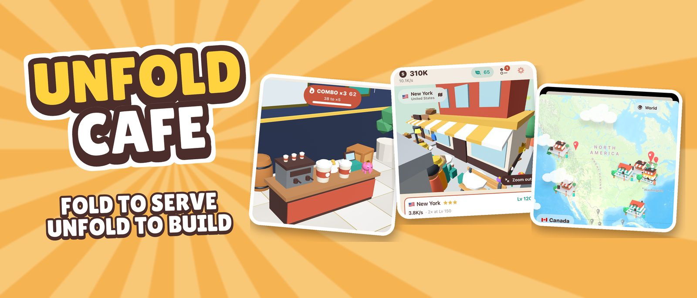

Alday Inc / Games & apps / Unfold Cafe
Idle café tycoon
Unfold Cafe: Idle Tycoon
Unfold Cafe
Open the screen, open a café.
An idle café tycoon built around one move: opening the screen. Folded, your iPhone Duo is the counter; unfold it and the 3D street appears, with your new café cutting its ribbon. Grow one café into a chain across 40 cities in 10 countries, with no ads, ever.

PriceFree, no ads, optional in-app purchases
DevicesiPhone · iPhone Duo
Languages10, incl. English & Bahasa Indonesia
OfflineYes
Made byAlday Inc